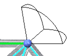
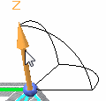
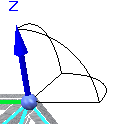
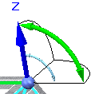
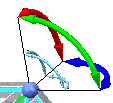

Define a release
-
Within the Frame environment, choose Simulation tab→Mesh group→Release.

-
Select a beam curve near the end you want to release.
Note:The triad denotes zero degrees of freedom (DOF) available at that joint. The axes represent translational DOF; the arc, rotational DOF.

-
Select the axis or arc representing the degree of freedom you wish to release.

When released the released DOF displays in its default color.

Note:The command stays active and you can continue to release additional DOF.
Example:Release translation in Z direction and rotation in the XZ plane.

Release rotation in all three planes, similar to a ball joint.

-
Type Esc to end the command.
How do I
Analyze a structural frame modelDefine rigid links manually
Define a node
Display a beam cross section
Tutorial: Simulate stresses on a bridge
Tutorial: Create and simulate a roof truss framework
Learn more
Rigid link connectorsQuick links
Beam reaction component plotsBeam stress component plots
Beam diagrams